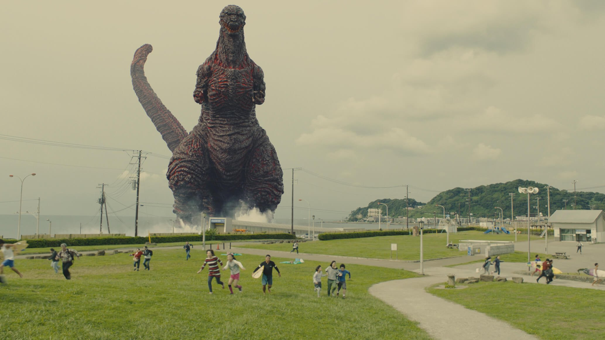

Shin originates from the by-product of nuclear waste that was disposed in Tokyo Bay. Shin is portrayed as a pre-historic sea creature that was mutated from the nuclear waste. Godzilla also evolves rapidly due to its unstable genetics and the ability to absorb and adapt to radiation from birth. Godzilla is shown a constantly evolving creature, growing stronger and more destructive with each phase. The movie, Shin Godzilla, portrays most of its forms while destroying most of Japan
Shin Godzilla is also critisizm on the Japanese government's bureaucratic response to many situations. The movie heavily focuses on their response to Godzilla, which highlights political tensions and thier decision-making struggles. Godzilla is protrayed as the most terrifying with its mutatuions and destructive power unlike earlier films. Godzilla's origin emphasizes humanity's role in creating the monster through environmental negligence and nuclear pollution.
Read more about the plot
Top 3 Godzilla FilmsHere is a review on reddit of the movie if interested(Disclaimer:one swear word and opinion-based)
| District/Area | Description |
|---|---|
| Kamata | Godzilla emerges in the Kamata district as a bipedal, amphibious creature |
| Shinagawa | A larger form that appears more humanoid, evolving from the 2nd form and appears in Shinagawa |
| Kamakura | Fully evolved Godzilla in its most powerful form with its immense size and atomic breath |